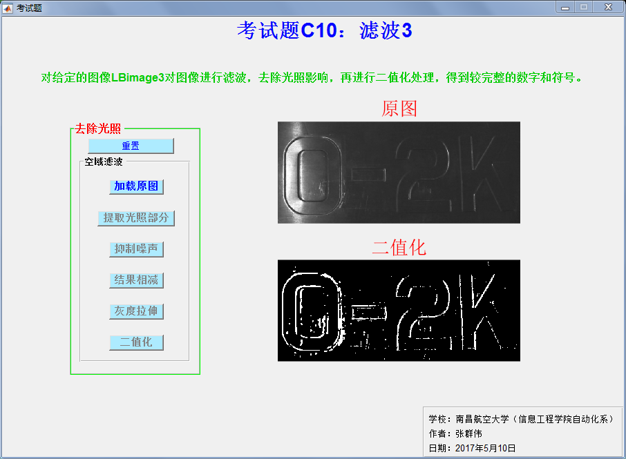

考试题：C10 滤波3
- 概述 ：对给定的图像LBimage3对图像进行滤波，去除光照影响， 再进行二值化处理，得到较完整的数字和符号。
- 作者 ：张群伟 南昌航空大学信息工程学院自动化系
- 日期 ：[4/5/2017]

1.主函数
function varargout = KaoShiTi(varargin)
% Begin initialization code - DO NOT EDIT gui_Singleton = 1; gui_State = struct('gui_Name', mfilename, ... 'gui_Singleton', gui_Singleton, ... 'gui_OpeningFcn', @KaoShiTi_OpeningFcn, ... 'gui_OutputFcn', @KaoShiTi_OutputFcn, ... 'gui_LayoutFcn', [] , ... 'gui_Callback', []); if nargin && ischar(varargin{1}) gui_State.gui_Callback = str2func(varargin{1}); end if nargout [varargout{1:nargout}] = gui_mainfcn(gui_State, varargin{:}); else gui_mainfcn(gui_State, varargin{:}); end % End initialization code - DO NOT EDIT
2.开始函数
function KaoShiTi_OpeningFcn(hObject, eventdata, handles, varargin)
% 全局变量 handles.img_old=0; % 源图像 handles.img=0; % 图像数据 [hight,width]=size(handles.img); % 检索图像尺寸 handles.img_width=width; % 图像宽 handles.img_hight=hight; % 图像高 % 设置 set(handles.Load_img,'enable','on'); set(handles.Minimum_img,'enable','off'); set(handles.Prewitt_img,'enable','off'); set(handles.Sub_img,'enable','off'); set(handles.N_img,'enable','off'); set(handles.BW_img,'enable','off'); % Choose default command line output for KaoShiTi handles.output = hObject; % Update handles structure guidata(hObject, handles); % UIWAIT makes KaoShiTi wait for user response (see UIRESUME) % uiwait(handles.figure1);
3.输出函数
function KaoShiTi_OutputFcn(hObject, eventdata, handles)
% Get default command line output from handles structure % varargout{1} = handles.output;
4.重置
function chongZhi_Callback(hObject, eventdata, handles)
% 重置图像 handles.img=handles.img_old; handles.img_AM=handles.img_old; % 重置使能 set(handles.Minimum_img,'enable','off'); set(handles.Prewitt_img,'enable','off'); set(handles.Sub_img,'enable','off'); set(handles.BW_img,'enable','off'); set(handles.N_img,'enable','off'); % 显示 axes(handles.axes2); imshow(handles.img); guidata(hObject,handles);
5.加载图像
function Load_img_Callback(hObject, eventdata, handles)
% 加载图像 str='LBimage3.bmp'; handles.img_old=imread(str); % 源图像 handles.img=imread(str); % 图像数据 % 显示图像 axes(handles.axes1); imshow(handles.img); title('\fontsize{20}\color{red}原图'); % 设置使能 set(handles.Minimum_img,'enable','on'); set(handles.Prewitt_img,'enable','off'); set(handles.Sub_img,'enable','off'); set(handles.BW_img,'enable','off'); set(handles.N_img,'enable','off'); % 更新数据 guidata(hObject,handles);
6.提取光照部分
function Minimum_img_Callback(hObject, eventdata, handles)
% 最小值滤波 handles.img=myfilter2('Minimum',handles.img,5); % 显示结果 axes(handles.axes2); imshow(handles.img); title('\fontsize{20}\color{red}提取光照部分(最小值滤波)'); % 设置使能 set(handles.Minimum_img,'enable','off'); set(handles.Prewitt_img,'enable','on'); % 更新数据 guidata(hObject,handles);
7.抑制噪声
function Prewitt_img_Callback(hObject, eventdata, handles)
% 抑制噪声(Prewitt算子) handles.img=myfilter2('Prewitt',handles.img); axes(handles.axes2); imshow(handles.img); title('\fontsize{20}\color{red}抑制噪声(Prewitt算子)'); % 设置使能 set(handles.Minimum_img,'enable','off'); set(handles.Prewitt_img,'enable','off'); set(handles.Sub_img,'enable','on'); % 更新数据 guidata(hObject,handles);
8.结果相减
function Sub_img_Callback(hObject, eventdata, handles)
% 减去光照分量 handles.img=handles.img_old-handles.img; % 显示结果 axes(handles.axes2); imshow(handles.img); title('\fontsize{20}\color{red}结果相减'); % 设置使能 set(handles.Minimum_img,'enable','off'); set(handles.Prewitt_img,'enable','off'); set(handles.Sub_img,'enable','off'); set(handles.N_img,'enable','on'); % 更新数据 guidata(hObject,handles);
9.灰度拉伸
function N_img_Callback(hObject, eventdata, handles)
% 灰度拉伸 % 对去除光照后的图像进行线性灰度拉伸 handles.img=13*handles.img; % 对图像中的数字‘0’进行局部中值滤波 handles.img(:,1:80)=myfilter2('Medium',handles.img(:,1:80),5); handles.img(:,80:180)=myfilter2('Medium',handles.img(:,80:180),5); % 显示结果 axes(handles.axes2); imshow(uint8(handles.img)); title('\fontsize{20}\color{red}灰度拉伸'); % 设置使能 set(handles.Minimum_img,'enable','off'); set(handles.Prewitt_img,'enable','off'); set(handles.Sub_img,'enable','off'); set(handles.N_img,'enable','off'); set(handles.BW_img,'enable','on'); % 更新数据 guidata(hObject,handles);
10.二值化处理
function BW_img_Callback(hObject, eventdata, handles) % 对图像进行分段二值化 % 对图像中的数字‘0’分两段进行不同阈值的二值化 left1=myim2bw(handles.img(:,1:80),0.99); left2=myim2bw(handles.img(:,80:180),0.3); % 合成数字‘0’ BW_left=[left1 left2]; % 对数字‘0’右边进行二值化 BW_right=myim2bw(handles.img(:,180:size(handles.img,2)),0.3); % 合成整幅图像 BW=[BW_left BW_right]; % 显示结果 axes(handles.axes2); imshow(BW); title('\fontsize{20}\color{red}二值化'); % 设置使能 set(handles.Minimum_img,'enable','off'); set(handles.Prewitt_img,'enable','off'); set(handles.Sub_img,'enable','off'); set(handles.N_img,'enable','off'); set(handles.BW_img,'enable','off'); % 更新数据 handles.img=BW; guidata(hObject,handles);